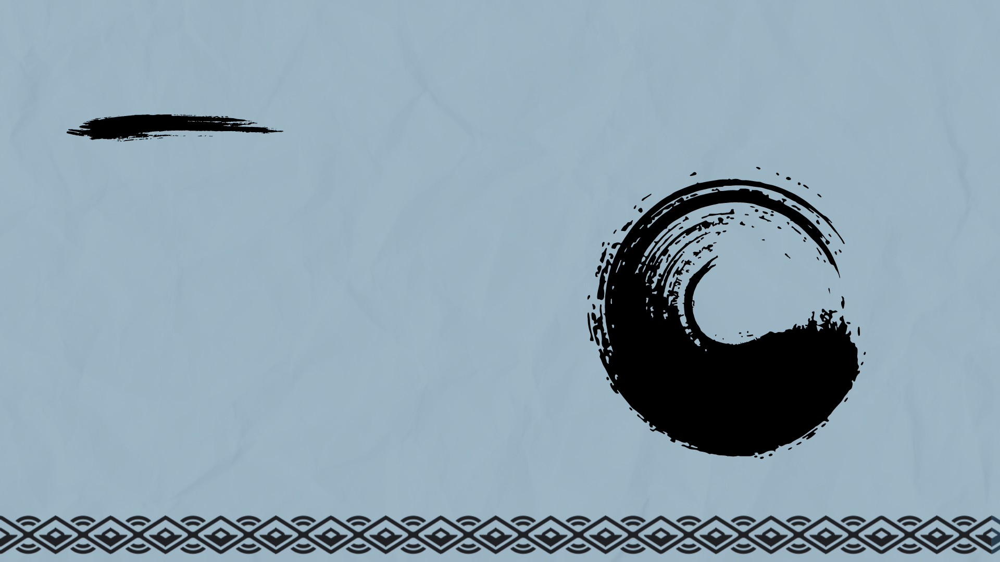
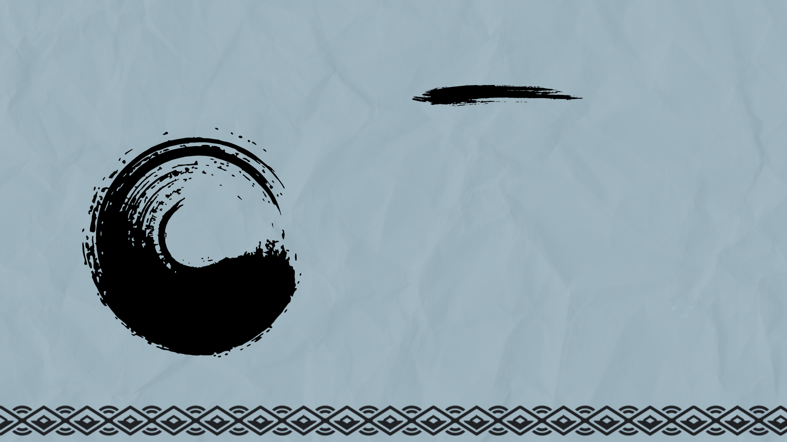
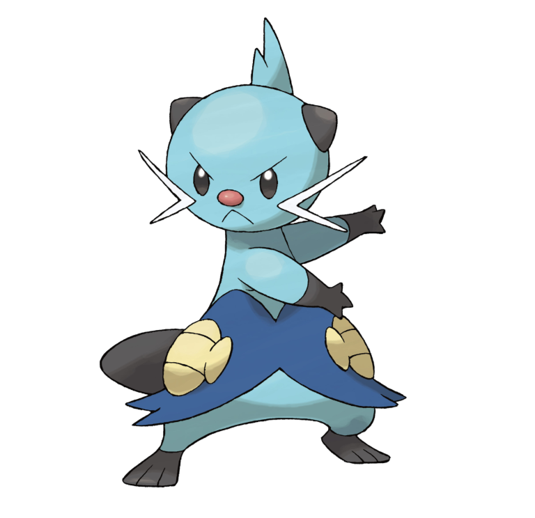
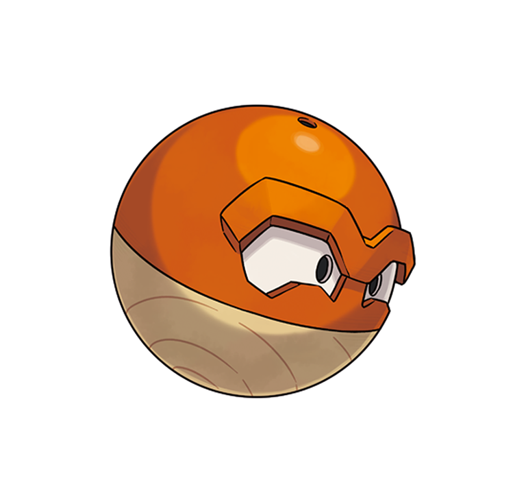
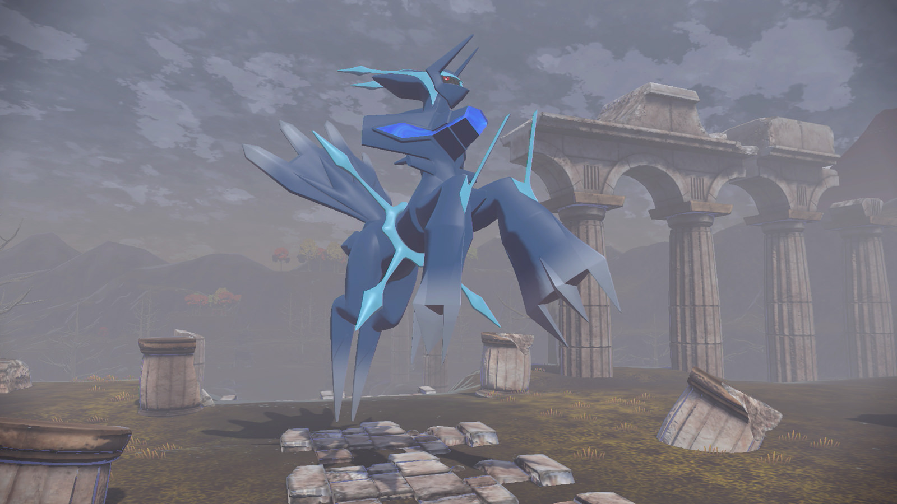
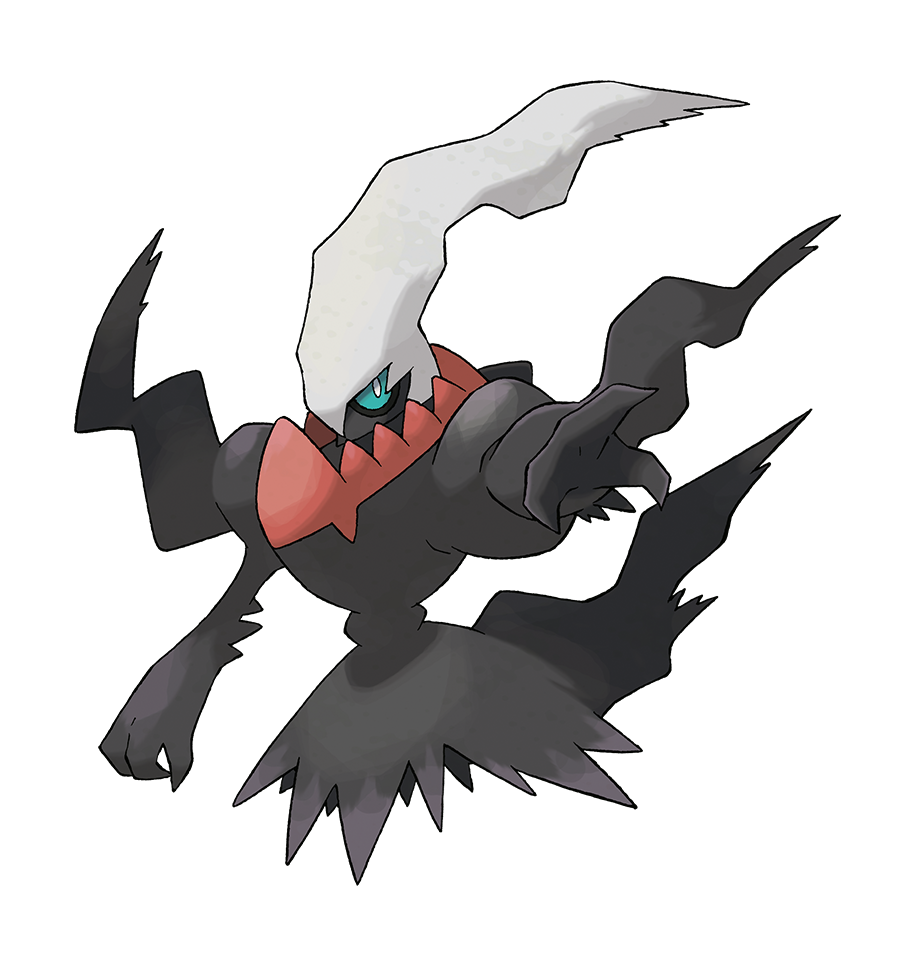
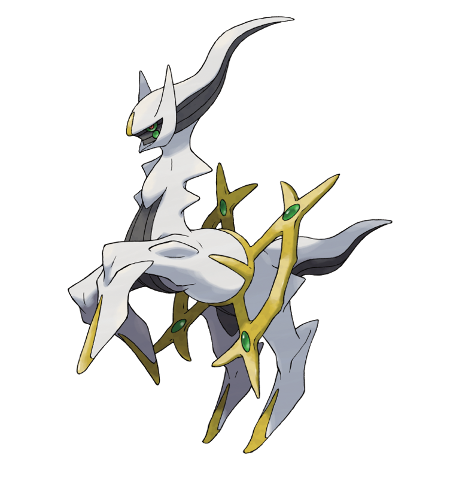

The Grass Quill Pokémon. Despite being nocturnal, Rowlet can rotate its head almost 180 degrees to see clearly in
both daylight and darkness. This Pokémon prefers to attack without making a sound, using the sharp leaves that form
its feathers to strike targets from a distance. Its soft plumage allows it to approach silently, making it a formidable hunter.

Cyndaquil
Type:
Fire
The Fire Mouse Pokémon. When threatened, Cyndaquil expels flames from its back to deter predators and protect itself.
This timid Pokémon is usually seen curled up and inactive, conserving energy until needed. When Cyndaquil feels comfortable,
its flames flicker gently, and it can be seen practicing its fire control by igniting twigs and leaves.

Oshawott
Type:
Water
The Sea Otter Pokémon. Oshawott carries a scalchop on its belly that doubles as both a weapon and a tool.
This scalchop is made from a hard mineral and can be used for various purposes such as battling and breaking
open hard berries. Oshawott is a playful Pokémon, often seen sliding around on its belly, which helps sharpen its scalchop.
Dartrix
Type:
Grass/Flying
The Blade Quill Pokémon. Dartrix is extremely vigilant and takes pride in its appearance, grooming its
feathers to perfection. When its feathers are ruffled, it can become distracted and fussy. In battle,
Dartrix uses its sharp feathers to execute precise and swift attacks. It is known to be quite tactical,
often setting traps with fallen feathers that can immobilize an opponent momentarily.
Quilava
Type:
Fire
The Volcano Pokémon. With a body temperature that can reach over 3,600 degrees Fahrenheit, Quilava can melt
anything in its path. It uses its agility to dodge incoming attacks, then strikes back with a burst of flames
from its back. Despite its fiery nature, Quilava is known to be fiercely loyal to trainers it trusts, often
signaling danger with a flicker of its flames.
Dewott

Type:
Water
The Discipline Pokémon. This Pokémon sharpens its twin scalchops daily, which are both a tool and a weapon.
Dewott has mastered a unique water combat technique through rigorous training. Known for its tactical prowess,
Dewott can adapt its strategy on the fly, making it a challenging opponent for any who face it in battle.
Decidueye
Type:
Grass/Fighting
The Arrow Quill Pokémon. Hisuian Decidueye has evolved to be fierce and stalwart in order to survive in
the region’s harsh environments. It doesn’t have a set territory. Instead, it goes wandering in search
of food to survive.
Typhlosion
Type:
Fire/Ghost
Hisuian Typhlosion is usually gentle and pacifistic. However, once angered, it loses control of its
emotions and incinerates opponents until not even ashes remain. It emits ghost flames from the fires around its neck.
These flames all attack the opponent, adopting the countenance of ferocious beasts.
Samurott
Type:
Water/Dark
Hisuian Samurott specializes in tricky tactics like surprise attacks and cheap shots in battle. Its fierce,
rapid attacks delivered with dual-wielded seamitars that strike like torrents of waves crashing together are
a sight to behold. It is said that wounds from these attacks will not heal for many years.
Wyrdeer
Type:
Normal/Psychic
The Big Horn Pokémon. Revered as a guardian in forests, its antlers house psychic energy, aiding in communication
and sensing danger. Known for its serene nature, it fiercely defends its herd and territory when threatened,
following ancient migratory patterns.
Basculegion
Type:
Water/Ghost
The Legion Pokémon. Formed from united Basculin, it hunts with ruthless efficiency, overwhelming prey
in synchronized swarms. This Pokémon gains power from the souls possessing it, letting it swim on and on
without tiring. Legends say its presence signals great upheaval in Hisui's aquatic ecosystems.
Kleavor
Type:
Bug/Rock
The Ironclad Pokémon. Covered in sturdy exoskeletal plates, Kleavor is known for its exceptional strength
and durability. It moves with surprising agility, utilizing its sharp pincers to swiftly dismantle obstacles
in its path. Legends tell of Kleavor's role as a guardian of the forests, using its formidable claws to defend
its territory from threats.
Hisuian Voltorb

Type:
Electric/Grass
The Magnetic Sphere Pokémon. With a unique metallic shell adorned with ancient symbols, it emits
mesmerizing bursts of light influenced by the region's spiritual energies. Despite its inscrutable
expression, it holds ancient knowledge, making it a revered figure in local folklore.
Hisuian Zorua
Type:
Normal/Ghost
The Illusion Fox Pokémon. It is known for its mischievous nature, often playing tricks on unsuspecting
travelers by creating illusions with its eerie flames. Legends suggest that Hisuian Zorua's illusions can
reveal hidden truths about the world around it, making it both feared and respected among locals.
Hisuian Zoruark
Type:
Normal/Ghost
Hisuian Zoroark is ferociously hostile and aggressive toward people and other Pokémon. But it appears to have
a compassionate streak for those it considers close or like family. Anyone able to establish trust with a
Hisuian Zoroark would likely find it an invaluable ally.
Hisuian Braviary
Type:
Flying/Psychic
Hisuian Braviary can imbue its eerie screeches with psychic power to generate powerful shock waves.
It then uses its sharp talons to tear at and seize prey weakened by these shock waves. Apparently,
it can also use its psychic power to sharpen its sixth sense and enter a trance that boosts its
physical abilities.
Hisuian Growlithe
Type:
Fire/Rock
Hisuian Growlithe are highly vigilant and tend to be seen watching over their territory in pairs.
Apparently, they have lived apart from humans for a long time and are unused to being around people.
Building trust with a Hisuian Growlithe takes time.
Dialga (Origin Forme)
Type:
Steel/Dragon
Dialga has the power to warp, destroy, and create time itself. The flow of time is said to be in
constant flux in the world where Origin Forme Dialga resides, always moving in different directions and different speeds.
Dialga’s signature move is called Roar of Time, which generates enough energy to distort time itself.

Palkia (Origin Forme)
Type:
Water/Dragon
Palkia has the power to warp, destroy, and create space itself. They say that the very space in
the world where Origin Forme Palkia resides is in shreds, as if it had been torn to ribbons.
Palkia’s signature move is called called Spacial Rend, which tears not only the target but the
very space around them asunder.
Darkrai

Type:
Dark
The Pitch-Black Pokémon. Known for inducing nightmares, it drifts through shadows, often appearing during
the new moon. It is said to be feared as its presence is often associated with ominous events, though it
means no harm. Legends tell of Darkrai's attempts to communicate through dreams, seeking to connect
with those who can understand its true nature.
Shaymin
Type:
Grass
The Gratitude Pokémon. This mythical Pokémon purifies the air by scattering glowing, aromatic pollen.
Known for its shy nature, Shaymin appears during times of gratitude and is said to bring bountiful
harvests and renewed life.
Arceus

Type:
Normal
The Alpha Pokémon. Known as the creator of the Pokémon world, Arceus is said to have shaped the universe
with its 1,000 arms. Revered as a deity, it can change its type using special plates, embodying the essence
of all Pokémon.